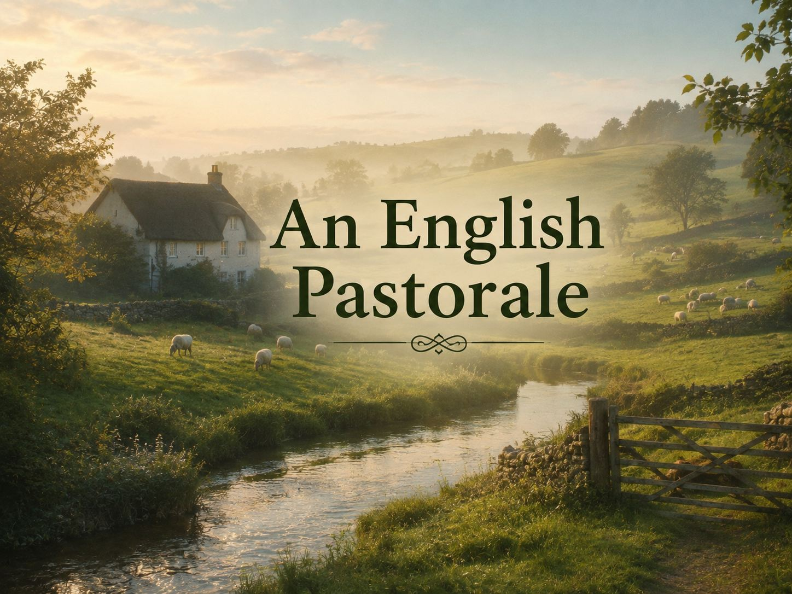
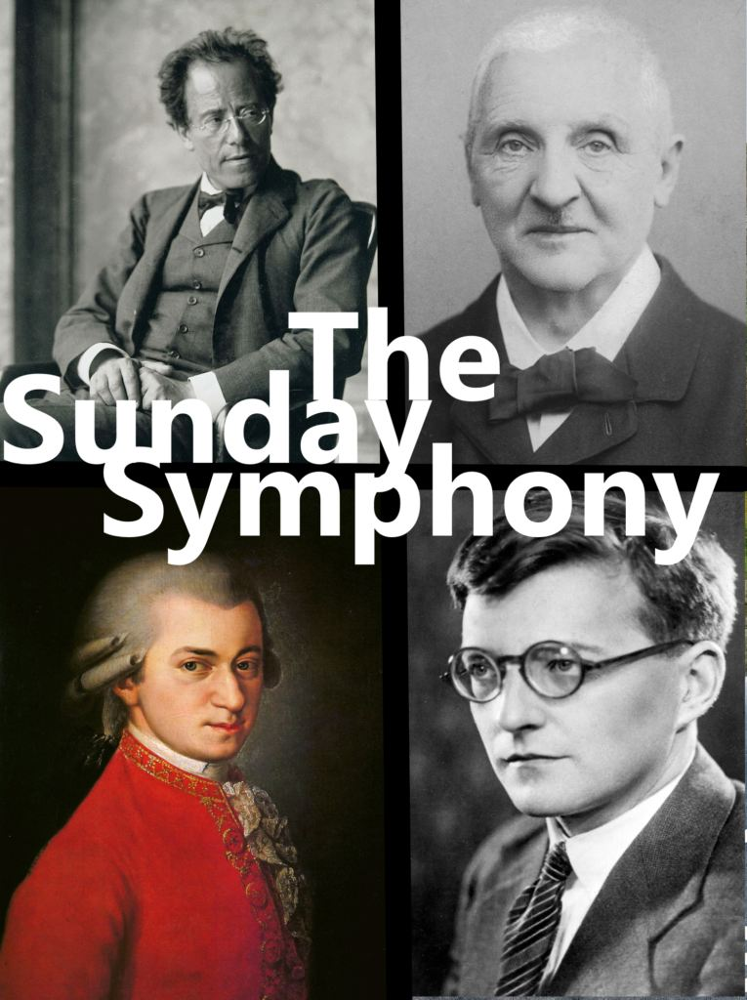
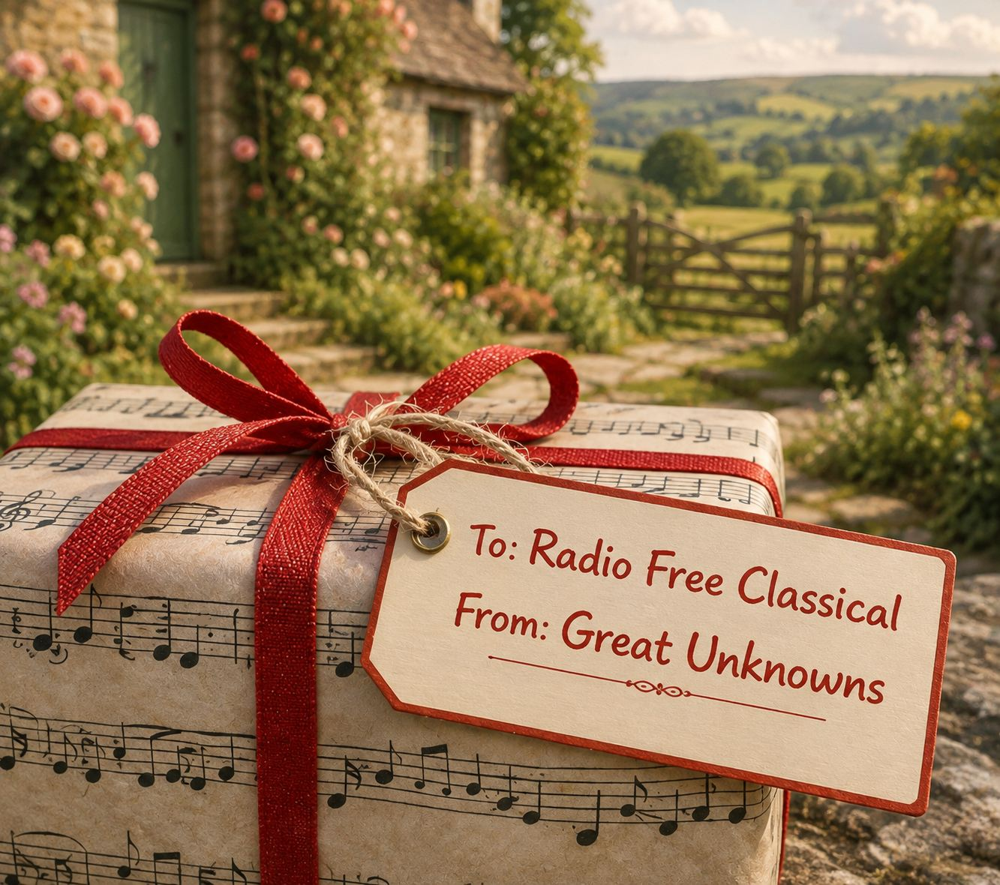
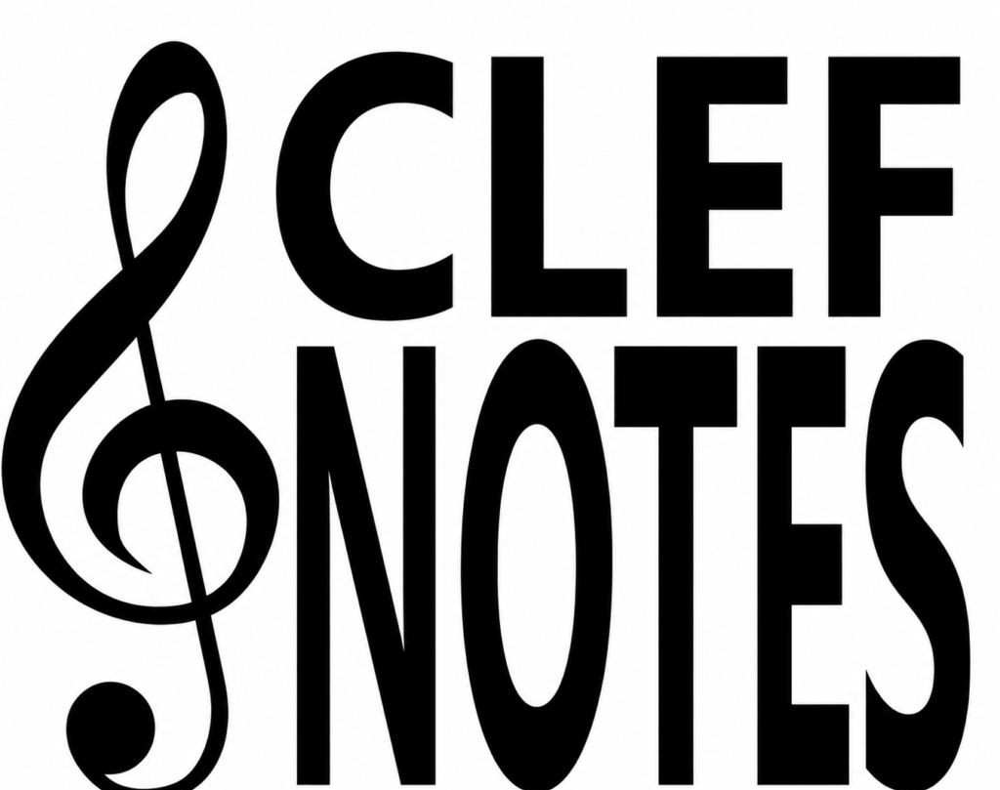
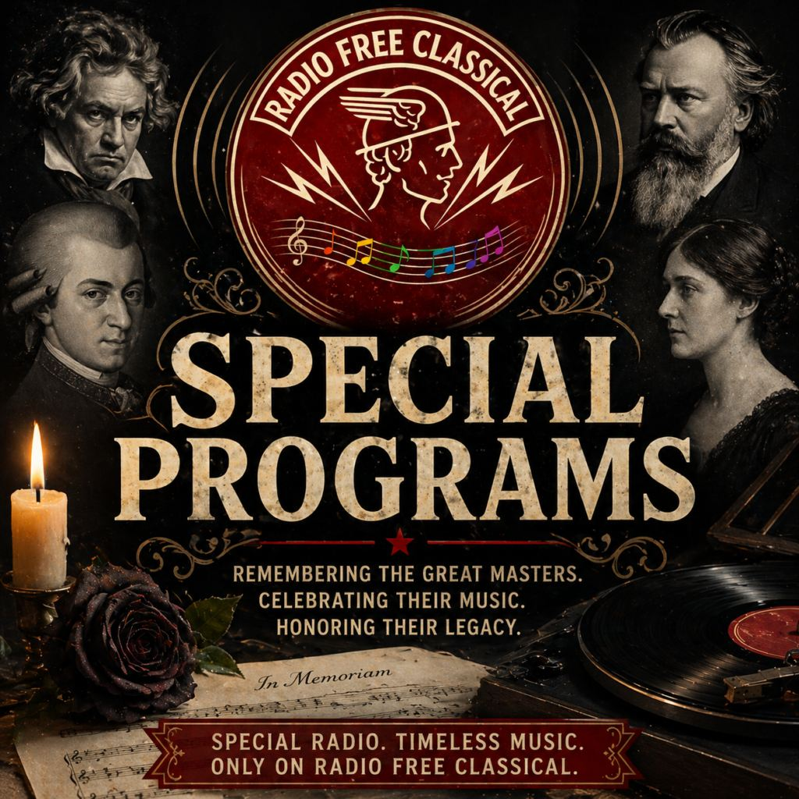
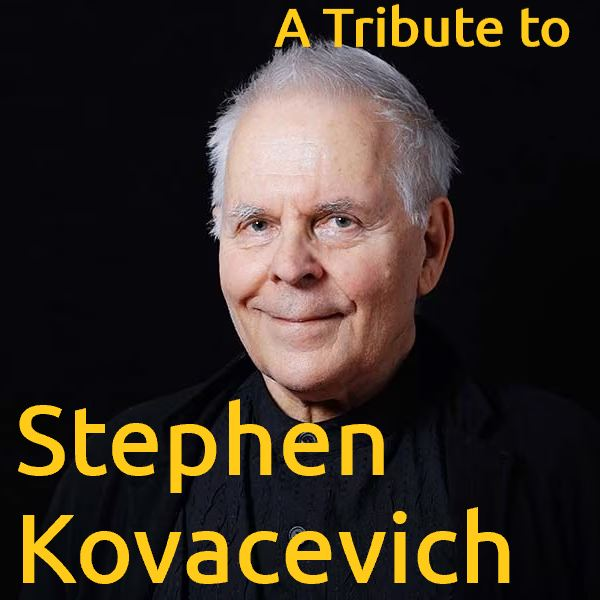
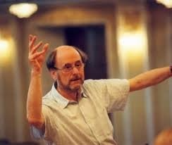
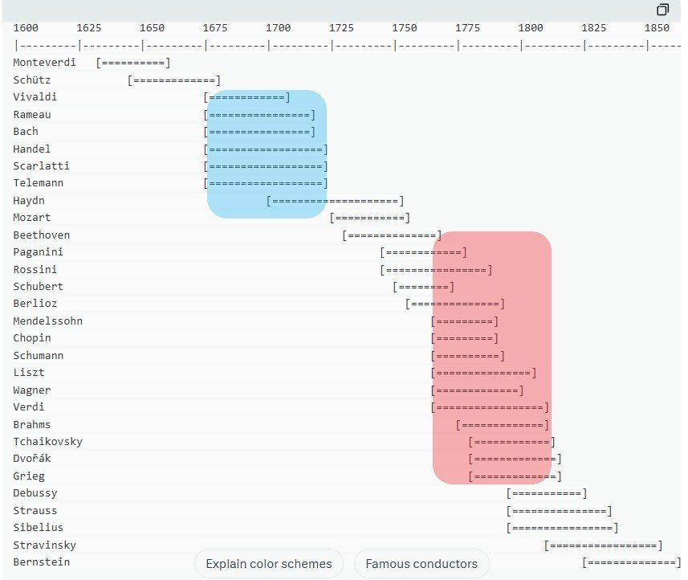

Sundays at 6
An English Pastorale
A trip to a scenic English garden, a lazy Shropshire river and a quiet Yorkshire glen. Pastoral music, mostly by 20th-century British composers.
Independent · Commercial-free · Streaming 24/7
The great works, the hidden gems and the stories behind them — hand-picked by a public radio host with more than 40 years behind the microphone.
From Lanesville, Indiana to the world
An important announcement
Running the station costs about $200 a month for broadcasting, music purchases and the website. Alan has paid for it himself until now, but his family’s circumstances have changed. If listeners can cover that $200 each month, the music keeps playing. If not, RFC will shut down on December 1, 2026.
For more than 40 years, I’ve had the privilege of creating classical music programs and sharing my love of this music with listeners. Radio Free Classical has been the culmination of that lifelong passion: an independent, commercial-free station offering a wide variety of classical music, special programs, composer tributes, and discoveries that often fall outside the usual classical repertoire.
I don’t want to shut down Radio Free Classical. I love doing this. But I also have to be realistic about what I can afford.
Every contribution matters. Even $5 helps. A handful of regular monthly supporters could make an enormous difference.
If Radio Free Classical has brought you pleasure, introduced you to music you might never otherwise have heard, or simply provided some welcome companionship throughout your day, I hope you’ll consider helping us keep it alive.
Thank you for listening. Let’s see if we can keep the music playing.
— Alan Brandt
Programs
Three distinctive programs, six unforgettable hours, every Sunday evening — plus musical tributes whenever the classical world makes news. All times Eastern.

A trip to a scenic English garden, a lazy Shropshire river and a quiet Yorkshire glen. Pastoral music, mostly by 20th-century British composers.

A major symphony performed complete, with background on how the work was written and first performed. Some run past an hour, so settle in. See past programs ↓

Music you may not know, even from famous composers. From Leopold Mozart’s “Peasant Wedding” to Louis Spohr’s Symphony No. 4.

A different classical theme each week, from “Cities in Music” and “Variations on a Theme” to “Friends of Mozart.” Host Alan Brandt draws connections that make the music even more interesting.

When something major happens in classical music, you’ll hear about it on Radio Free Classical. Past specials include musical memorials for Sir Roger Norrington, Alfred Brendel, Michael Tilson Thomas, Felicity Lott and Stephen Kovacevich, with recordings, performances and sometimes interviews from across their careers.
The Sunday Symphony · Sundays at 8 Eastern
Alan opens each broadcast with the composer’s influences and inspirations, plus anything interesting about the chosen recording. Here’s what RFC has presented so far. Listen for rebroadcasts.
One of the composer’s most serene achievements. Written during the turmoil of World War II and dedicated to Sibelius, it unfolds with warmth, reflection and quiet conviction, finding beauty and reassurance in the darkest of times.
A monument of late Romanticism, full of soaring faith and immense scale. Its slow movement, among the most moving ever written, was composed as Bruckner sensed the approaching death of his hero Wagner.
Birdsong, folk dances, military marches and heartbreaking lyricism in one story, from a mysterious dawn to a triumphant finale.
From Mozart’s astonishing final summer of symphonies: elegance and surprising emotional depth, wit and effortless invention in perfect balance.
Misty landscapes and ancient ruins turned into a Romantic journey of windswept dances, storms and a noble homecoming.
Quiet beginnings grow into one of classical music’s most exhilarating finales. A symbol of Finnish resilience, determination and hope.
Endless melody and irresistible rhythmic drive. Schumann famously praised its “heavenly length.”
Chorus and soloists burst into the “Ode to Joy,” turning the symphony into a universal celebration of human brotherhood.
A sweeping Romantic epic and a triumphant comeback after the disastrous premiere of his First Symphony.
Bold, unsettling and decades ahead of its time, pushing the orchestra to astonishing extremes.
Presented on the Sunday Symphony. Listen for a rebroadcast.
Presented on the Sunday Symphony. Listen for a rebroadcast.
Notes from the station
RFC keeps up with current events in classical music, and adds memorial and theme series to the schedule so listeners can appreciate the artists who shaped it.

One of the most searching pianists of his generation. He studied with Dame Myra Hess, left landmark Beethoven recordings, and partnered with Sir Colin Davis, Jacqueline du Pré and Martha Argerich. Around 2000 he appeared as a soloist with the Louisville Orchestra.
RFC aired a two-hour tribute of his finest recordings.

Norrington, who died at 91, was one of the great pioneers of the early music revival. RFC paid tribute with a three-hour selection of his recordings.

A timeline of composers’ lives shows two remarkable moments: the Baroque, with Bach, Vivaldi and Handel all at work, and the Romantic age, when Rossini, Liszt, Schubert, Brahms, Tchaikovsky and Dvořák were creating at once.
About Radio Free Classical
Radio Free Classical was created by Alan Brandt, a classical radio host and producer for public radio since 1983. He has brought his extensive knowledge and music collection online for you to enjoy.
His mission is not only to keep the classics alive, but to educate listeners about lesser-known composers and musicians.
Classical music is for everyone.
Support the stationRadio Free Classical is on Substack
Free articles and subscriber content from Alan, all about the music, the composers and the programs.
Contact
Questions, requests or a kind word for the host? We’d love to hear from you.